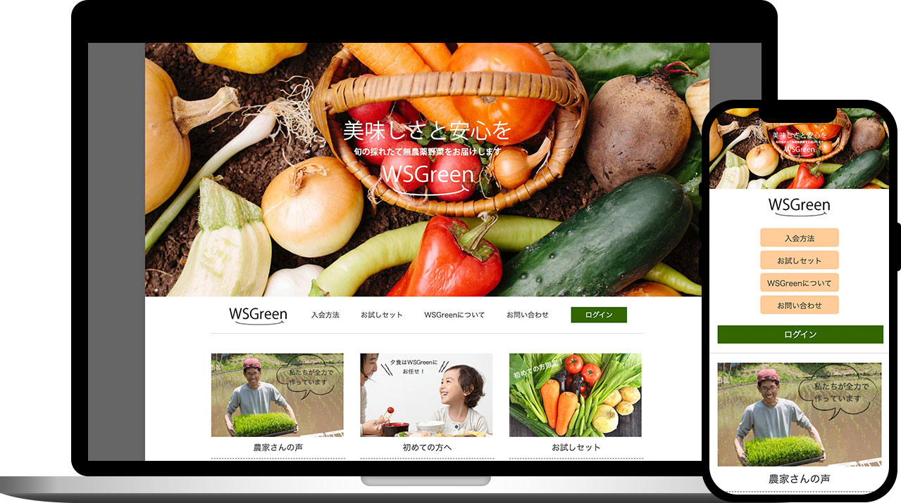
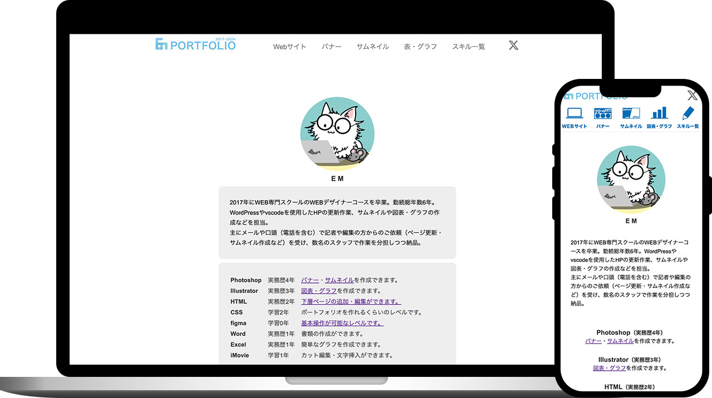
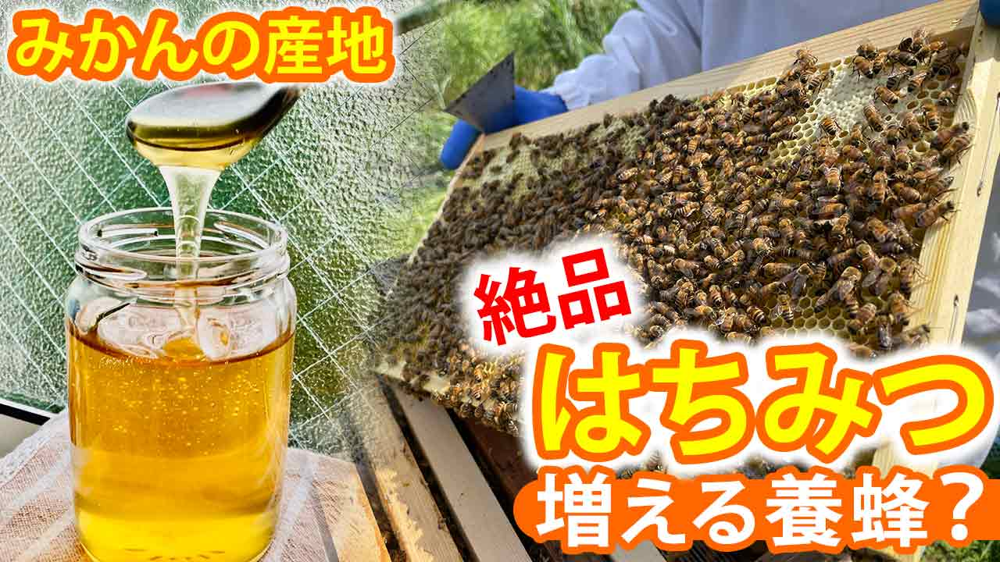
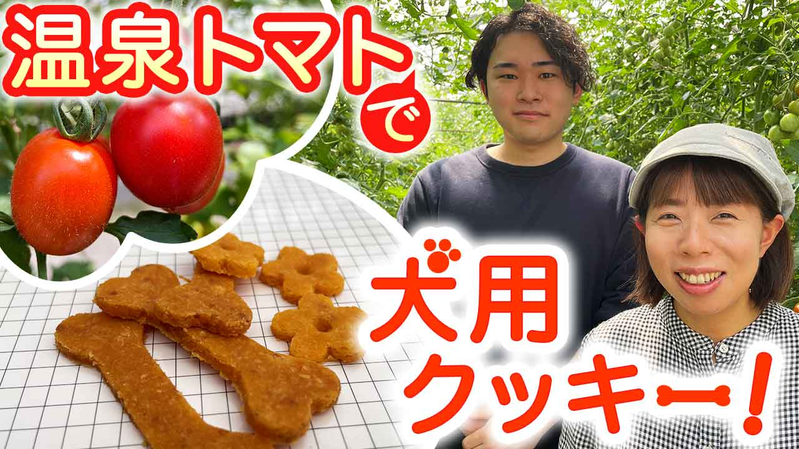
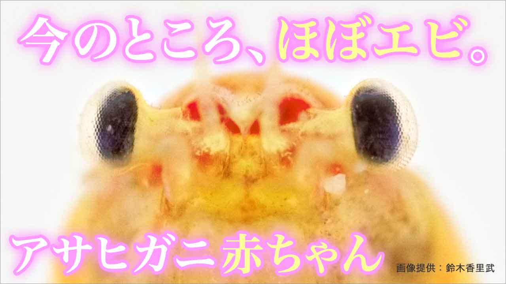
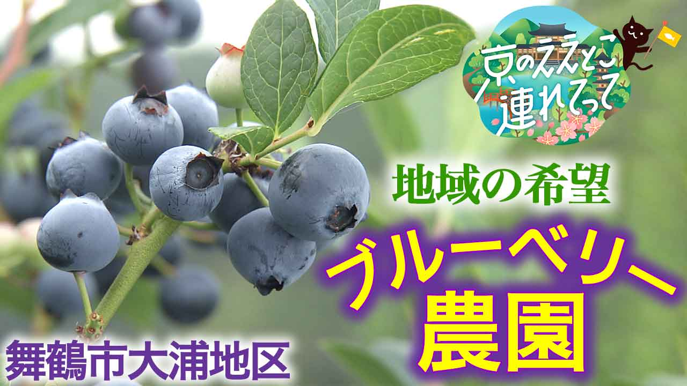
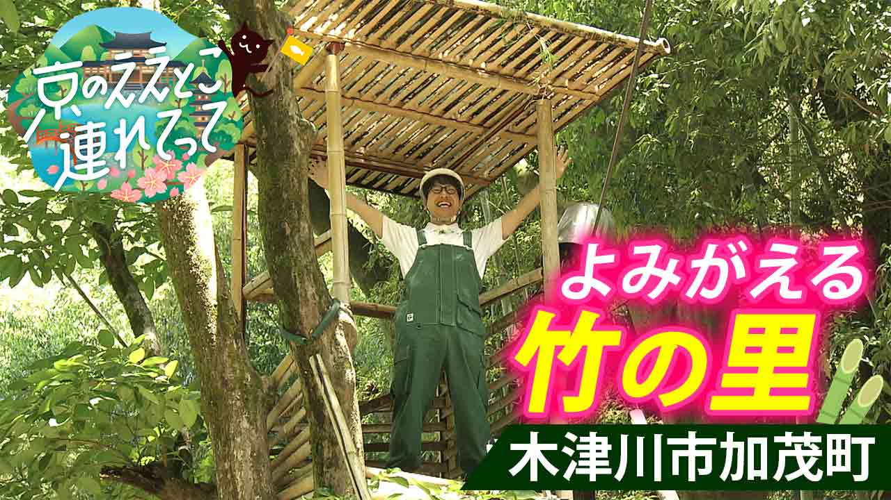
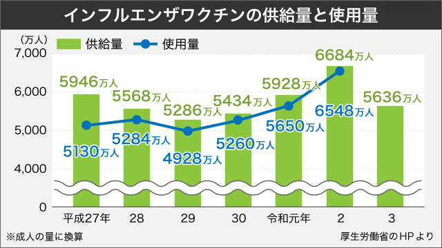

7年間のWeb運用実績に基づき、突発的な制作・更新にも柔軟に対応します。 データの図表化や、文脈に合わせたオリジナルイラストの作成が得意です。
大手テレビ局のWebサイト部門にて5年間、スピードと正確性が求められる環境で日々のページ更新・画像加工・サムネイル・図表制作を担当。
Web・サムネイル・SNSバナーをスピーディに量産対応。
複雑なデータやグラフを美しいインフォグラフィックに整理して共有。
増田絵理と申します。私はWeb制作やグラフィックデザインと動画編集の領域で計８年間、実務に携わってきました。
大手テレビ局のWebサイト部門にて5年間派遣社員（または契約社員）として勤務した経験があり、スピード感と正確性が求められる環境のなかで、日々のページ更新や画像加工、サムネイル、図表・グラフ作成を実直に任せていただいておりました。
日々の運営・サポート業務を確実にこなしつつ、以下のような「マルチなクリエイティブ対応」でチームの機動力を支えられます。
お知らせページや下層ページの追加、簡単なHTML/CSSの修正を迅速に対応・改善できます。
単なる作業にとどまらず、文脈に合わせたイラストの作成、またクライアントが喜ぶプラスアルファのデザイン提案ができる点が強みです。
運用に必要な複雑なデータやグラフを、一目で伝わる美しいインフォグラフィック（図表）に整理して共有できます。
| ツール名 | 実務年数 | できること |
|---|---|---|
| Photoshop | 6年 | 画像加工・コラージュ・サムネイル・バナー・アイコンの作成 |
| Illustrator | 4年 | サムネイル・図表・グラフ（Excel を併用）・簡単なイラスト（犬猫・小道具など）の作成 |
| VSCode | 2年 | HTML5・CSSの書き換えなど（Webクリエイター能力認定試験エキスパート取得） |
| WordPress | 2年 | 既存サイトの更新（変更・記事の追加など） |
| DaVinci Resolv | 1年 | カット・挿入・音入れ・テロップなどの基本操作 |
| GitHub | 1年 | 基本的なアップロード作業 |
| Excel | 1年 | 簡単な入力、集計（SUM 関数など） |
| チャットツール | — | 「ChatWork」「Slack」「zoom」「LINE」など |
| AI | — | このサイトは、claudでベースコードを作成しております。 |
観光客の増加をねらう沖縄の地域情報サイト。旅行を考えている20〜40代の男女をターゲット。
サイトを見る →
新規顧客の増加をねらう、有機無農薬野菜の宅配サービスサイト。健康や自然食品に興味のある30代以降の主婦層がターゲット。
サイトを見る →
今まで学んだスキルの復習を兼ねて、画像作成からコーディングまで全て1から手作業で作成。縦長の縦型サイト構成。
サイトを見る →その他のサムネイル作品





その他のバナー作品

その他のグラフ・表作品